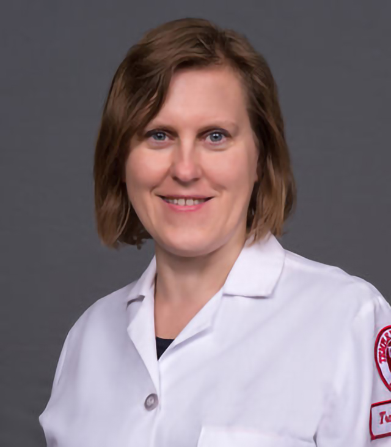

© 2026 Beata Kosmider Lab
Site designed by Z. Zhou

Alveolar Type II Cell Biology | Lung Regeneration | Inflammation Research

Professor and Principal Investigator
Dr. Kosmider is the Director of the Center for Inflammation and Lung Research at Lewis Katz School of Medicine at Temple University. She leads a research program focused on AT2 cells and their interactions with immune cells, fibroblasts, and endothelial cells using co-culture systems, precision-cut lung slices, and organoids. The team integrates advanced multi-omics approaches, including single-cell RNA sequencing, proteomics, metabolomics, and lipidomics, to define the molecular pathways that drive alveolar injury, repair, and disease progression and to identify novel therapeutic targets for chronic lung diseases, including emphysema.
Associate Scientist
Defining the molecular pathways that determine AT2 cell fate following lung injury and contribute to disease pathogenesis.
Postdoctoral Fellow
Identifying mechanisms of AT2 cell loss in emphysema to develop strategies that preserve alveolar integrity and lung function.
Postdoctoral Fellow
Investigating the functional role of transitional AT2 cells as critical intermediates in alveolar epithelial repair and regeneration.
© 2026 Beata Kosmider Lab
Site designed by Z. Zhou